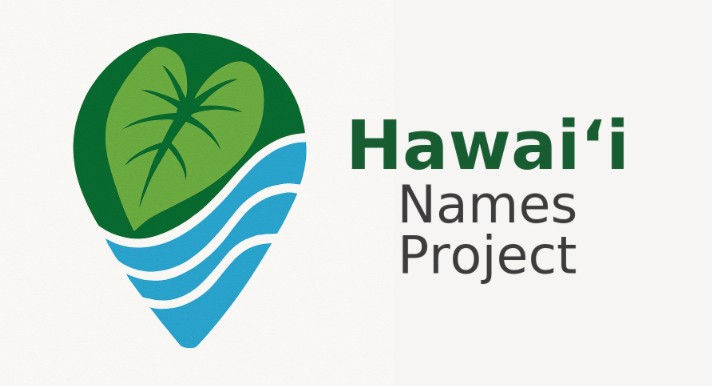

Start with the map — tap a pin and follow the name.
Places that vanished — but still deserve to be remembered. Click a card, or find them on the map.
The heartbeat of statewide gatherings.
Buried beneath lava, but not forgotten.
Short profiles on familiar names — what they mean, who they honor, and why they matter.
A royal name that endured.
Land, legacy, and cattle.
Long-form chapters where a single name opens into politics, culture, loss, and continuity.
Power, land, and identity.
Power, reform, and the reshaping of the Hawaiian Kingdom.